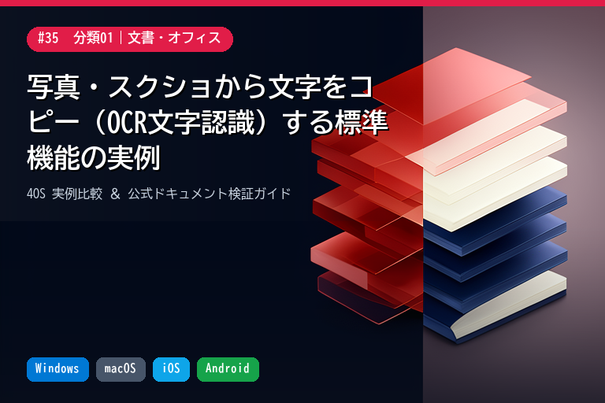

#35｜分類01: 文書作成・オフィス業務・事務作業 2026-11-23

写真・スクショから文字をコピー（OCR文字認識）する標準機能の実例｜Windows・macOS・iOS・Android
「この画像の中にある文字だけをコピーして、ExcelやWordに貼り付けたい……」
そんな場面、一度は経験があるのではないでしょうか。手書きのメモや、Webサイトのスクリーンショット、あるいはPDF内の図解など、画像として保存されているデータからテキストを抽出するのは意外と手間がかかる作業です。
かつては専用のOCRソフトをインストールする必要がありましたが、現在は主要なOS（Windows, macOS, iOS, Android）の多くで「標準機能」として文字認識（OCR）が組み込まれています。
しかし、「どのOSでも同じようにボタン一つでできる」というわけではありません。 OSによって、ブラウザを経由するのか、写真アプリで直接行うのか、あるいはクラウドストレージと連携するのかといった「作法」が大きく異なります。
この記事では、4つの主要OSにおける標準的なOCR手順を徹底比較し、初心者の方でも迷わずに文字をコピーできるよう解説します。
4OS比較早見表
| OS | 主な標準機能・アプリ | 特徴・備考 |
|---|---|---|
| Windows 11 | Microsoft Edge / Copilot+ PC | ブラウザ（Edge）経由、または最新のAI搭載機で操作。 |
| macOS | プレビュー / ショートカット | 「プレビュー」アプリで直接選択可能。非常にスムーズ。 |
| iOS | Live Text (写真アプリ) | 写真やカメラ画面から直接指でなぞってコピー。 |
| Android | Google ドライブ / Google レンズ | クラウド連携やGoogleレンズ機能を利用するのが一般的。 |
1. Windows 11 での実例手順
Windows 11では、特定の「OCR専用アプリ」があるわけではなく、ブラウザや最新のAIフレームワークを活用するのが標準的な流れです。
【推奨される操作手順】
1. Microsoft Edgeを使用する:
* ブラウザ（Microsoft Edge）を起動し、「ファイル > オープン」から対象の画像ファイルを選択します。
* 表示された画像上で、マウスを動かしてテキストをドラッグします。
* 青く反転した状態で「コピー」を選択します。
2. Copilot+ PC（最新機種）の場合:
* 対応するPCであれば、画像を右クリックした際に「抽出する」というメニューが表示され、AIが瞬時にテキスト化してくれます。
⚠️ 注意点（ハルシネーション防止）
* 「フォトアプリを右クリックして『テキスト抽出』を選ぶ」という操作は、現時点ではすべてのWindows 11環境で標準実装されているわけではありません。基本的にはMicrosoft Edge経由での操作が最も確実な標準手順です。
よくあるトラブルと解決チェックリスト
* 「コピーして編集」メニューが出てこない: Windowsの標準機能としてOCRが全面実装されていないため、Edgeブラウザで画像を開く手順を試してください。
* 日本語認識精度が低い: 標準エンジンは英語に強い傾向があります。より高精度な抽出が必要な場合は、Microsoft公式アプリの「OneNote」に画像を貼り付けて右クリックから「テキストをコピー」を行うのが確実です（Office 365サブスクリプション推奨）。
* 画像が解像度不足で認識できない: 画像がぼやけている場合、Edgeでも選択できません。撮影直後の高画質データを使用するか、PDFとして読み込み直してください。
2. macOS での実例手順
macOSは、4つのOSの中で最も「標準機能」としての統合が進んでおり、非常に直感的に操作できます。
【推奨される操作手順】
1. 「プレビュー」アプリを使用する:
* 画像またはPDFファイルを「プレビュー」アプリで開きます。
* メニューバーの「ツール > テキストを選択」をクリックします。
* 画面上に青い枠が表示されたら、コピーしたい範囲をドラッグして選択し、「編集 > コピー」を実行します。
2. 「ショートカット」アプリを使用する:
* 「画像を選択」アクションと「テキストを抽出してクリップボードに保存」アクションを組み合わせたショートカットを作成することで、より高度な自動化が可能です。
⚠️ 注意点（ハルシネーション防止）
* 「システム設定」の中にOCRのオンオフスイッチはありません。常に機能していますが、Intel製MacよりもApple Silicon搭載機の方がスムーズに動作する傾向があります。
よくあるトラブルと解決チェックリスト
* 「テキストを選択」メニューがグレーアウトしている: ファイル形式が非対応（特殊な画像形式など）か、解像度が極端に低い可能性があります。「ファイル > エクスポート」で一度PDFに変換してから再度開いてみてください。
* 抽出した文字がおかしい: 手書き文字や複雑な表組みは正確に読み取れないことがあります。この場合は「ショートカット」アプリからGoogle Cloud Vision APIなどを呼び出すワークフローへの切り替えを検討してください。
* クリップボードに保存されない: 「テキストを選択」の後にコピー操作が必要です。「編集 > クリップボードのすべてを表示」で内容を確認してください。
3. iOS（iPhone / iPad）での実例手順
iOSでは「Live Text（テキスト認識）」という強力な機能が写真アプリやカメラに統合されています。
【推奨される操作手順】
1. 「写真」アプリからコピー:
* 「写真」アプリを開き、文字が含まれる画像を表示します。
* 画面を長押しするか、右下のテキスト認識アイコンをタップすると、範囲を選択して「コピー」できます。
2. カメラアプリで直接操作:
* カメラをかざした状態で、画面上の文字を指でなぞるだけで選択・コピーが可能です。
3. 「ショートカット」アプリの活用:
* 「画像からテキストを読み取る」アクションを使用すれば、ファイルを選択するだけで自動的にクリップボードへ送る仕組みを作れます。
⚠️ 注意点（ハルシネーション防止）
* 「設定 > 写真 > OCRを有効にする」という項目はありません。iOS 16以降であれば標準でオンになっています。また、RAW形式や一部の圧縮GIFでは認識できない場合があります。
よくあるトラブルと解決チェックリスト
* 「コピー」メニューが出てこない: iOSのバージョンが古い（iOS 16未満）か、設定の「一般 > キーボード」でLive Textがオフになっている可能性があります。
* カメラアプリで反応しない: レンズカバーやケースによる遮蔽、または強い光の反射が原因であることが多いです。照明を変えるか、「写真」アプリに保存してから操作してください。
* ショートカットで失敗する: バージョンにより挙動が不安定な場合があります。「ファイル」アプリ経由で画像を渡すことで解決することがあります。
4. Android での実例手順
Androidの場合、OS標準というよりも「Googleのサービス（ドライブやレンズ）」と密接に連携することでOCRを実現するのが一般的です。
【推奨される操作手順】
1. Google ドライブを使用する:
* Google ドライブアプリを開き、「＋」>「スキャンしてアップロード」で画像を撮影します。
* アップロードされたファイル（PDFまたはJPG）を長押しし、メニューから「コピー」を選択します。
2. Google レンズを活用する:
* 多くの端末では標準カメラに統合されています。レンズアイコンをタップし、「テキスト抽出モード」に切り替えてから範囲を選択してコピーします。
⚠️ 注意点（ハルシネーション防止）
* 「設定 > アプリ > カメラ > テキスト認識」といった共通のメニューは存在しません。PixelやGalaxyなど、メーカーによって「Googleレンズ」や「Galaxy AI」として独自実装されているため、機種固有の名称を確認する必要があります。
よくあるトラブルと解決チェックリスト
* 長押ししても反応しない: Google ドライブアプリのバージョンが古いか、ファイル形式がPDFになっていない可能性があります。「PDFに変換してから再度開く」を試してください。
* 機種による名称の違い: Pixelは「Googleレンズ」、Galaxyは「テキスト抽出（Galaxy AI）」など表示が異なります。メニュー名が違う場合は端末固有のヘルプを参照してください。
* 認識範囲が狭い: カメラ画面で枠外に出るとコピーできません。「Googleレンズ」アイコンをタップして専用モードに切り替えてください。
まとめ：快適なマルチOS環境を作るポイント
今回の比較でわかった通り、4つのOSすべてで「画像から文字を抽出する」ことは可能ですが、そのための「標準的なルート」はそれぞれ異なります。
- WindowsならEdgeブラウザを活用
- macOSならプレビューアプリのツールメニュー
- iOSなら写真アプリのLive Text
- AndroidならGoogleドライブやレンズ連携
これらを使いこなすことで、手入力の手間を大幅に削減し、事務作業のスピードを劇的に向上させることができます。
さらに快適なマルチOS環境を構築するなら、以下の周辺機器・ツールの導入も検討してみてください。
- Office互換ソフト: 抽出したテキストをすぐに整形して書類化するために必須です。
- PDF編集ソフト: OCRで抽出したテキストをレイアウト通りに配置する際に非常に便利です。
- 外付けキーボード・大型モニター: 特にWindowsやmacOSでの事務作業では、広い画面で画像とテキストエディタを並べて表示し、物理キーボードで素早く打ち込む環境が生産性を最大化します。
それぞれのデバイスの「標準機能」を正しく理解し、最適なツールと組み合わせて、ストレスフリーなワークフローを実現しましょう。
参考文献・公式ドキュメント（一次情報ソース）
本記事の手順・仕様は以下の各OSおよびツールの公式ドキュメントに基づいています。OSアップデートによりメニュー名称や挙動が変わる場合があるため、最新仕様の確認にもご活用ください。
- [Windows] Microsoft Edge 印刷・PDF関連ポリシー公式ドキュメント | Microsoft Learn
- [macOS] Macの「プレビュー」でPDFを結合する - Apple サポート (日本)
- [macOS] Macの「プレビュー」でPDFのサイズを減らす - Apple サポート (日本)
- [iOS] iPhoneの「ファイル」でファイルやフォルダを変更する - Apple サポート (日本)
- [iOS] ショートカット ユーザガイド - Apple サポート (日本)
- [Android] Google ドライブでドキュメントをスキャンする（PDF保存） - Google ドライブ ヘルプ
- [Android] Chrome から印刷（PDF として保存・ページ範囲指定） - Google Chrome ヘルプ